一、产品简介
1.1产品概述
AL-M90系列车载智能终端是我公司专为公交车、出租车等运营车辆应用打造的集合多种实用功能于一体的车载智能终端产品。集成智能调度、自动报站、倒车后门监视、自动排班管理、TTS等功能。显示采用带触摸功能的10.1寸高清屏；接口丰富，可对接车载DVR、LED屏、IC刷卡机、投币机、广告机、LCD导乘图、客流统计、CAN等其他设备。
产品结构简单，安装方式灵活，日常维护简单。产品整体采用模块化设计和生产，GPS定位模块、4G模块、WIFI模块、语音模块、电源模块、触摸LCD显示模块等；完全针对公交车、出租车等运营车辆环境的特殊性和复杂性而设计。
1.2产品特色
1、Android 11操作系统；
2、系统稳定性和可靠性高，模块化程度高；
3、自动报站准确性高，针对公交行业的业务应用，采用独特的算法和数据处理方式，利用GPS定位数据，实现符合公交运营需要的准确报站；
4、支持现场各种复杂线路运营，如：环形、U型、9字型、8字型等；
5、电源保护功能，针对公交车辆专门设计的电源，具有多重保护功能，保证系统的稳定性和可靠性；
6、完善的智能调度功能，司机刷卡考勤，TTS调度指令播报，MIC喊话及中心通话功能等；
7、友好的人机界面，显示站点，司机姓名，调度计划，还可显示本车、前后车的车距，合理的安排车辆运行间距，提高市民的乘坐体验；
8、丰富的外设接口，可对接LED路牌、广告机、POS机、DVR、投币机、LCD导乘图、CAN总线等设备；
9、10.1寸LCD触摸高清显示屏，更好的视野；
10、支持远程报站文件更新，支持远程升级；
11、支持TTS报站；
12、设备采用无实体按键设计，更能提高操作使用体验；
13、无缝对接DVR，可控制DVR界面显示，无需遥控器操作；
15、支持直立型支架，抱柱型支架，嵌入式支架等3种支架安装方式。
1.3产品外观
本产品使用全黑色包装，外观简洁、大方，操作方便。
正面图 | 背面图 | 侧面图 |
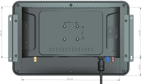 | 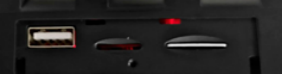 说明：1、 USB接口2、TF卡槽 3、SIM卡槽 |
1.4系统功能图
二、界面及操作介绍
2.1主界面
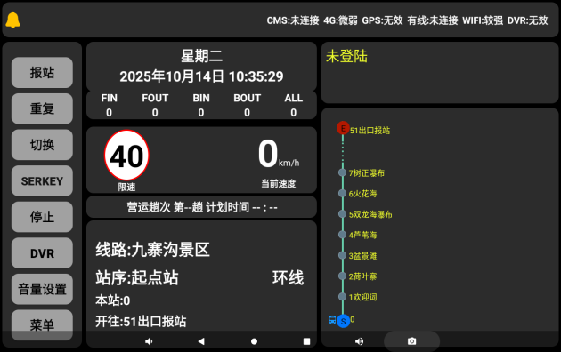
说明：
1、顶部为各个状态显示，CMS：调度平台连接状态；DVR：终端和DVR主机连接状态，4G：4G信号连接状态，WIFI：WIFI信号状态，GPS：定位状态；
2、左侧按键，中间“4个箭头”按键按下，左侧弹出F0-F9功能按键、上下方向、调度按键；“DVR”按键按下右侧显示DVR画面，左侧弹出的按键可控制DVR；“报站”按键手动报站；“重复”重复当前站点的报站；“切换”切换上下行；“停止”停止当前语音的播报；
3、“发车时间”为调度平台下发的当前趟次的发车时间；当前时间发出的趟次；司机刷卡考勤后显示司机名字；
4、右侧竹节图往上走，起点站在下，终点站上，并显示当前车站所在的站点位置；
5、线路名称，上下行，本站、下站实际状态显示，站点序号；
6、“限速”和“当前速度”；
7、当前时间显示。
2.2 按键界面
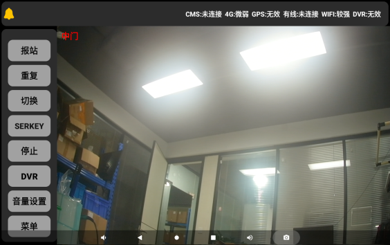
说明：
1、按下主界面“*“键进入该界面；
2、F0-F9按下播放公益语音，其中F1-F8为内音，F0和F9为外音；
3、上下箭头调整站点站序；
4、*消息查看，查看平台下发的信息；
5、*排班查询：查询本辆车全天的流水班次，平台下发，均在右侧屏区显示；
6、ESC退出到主界面。
2.3 DVR按键界面
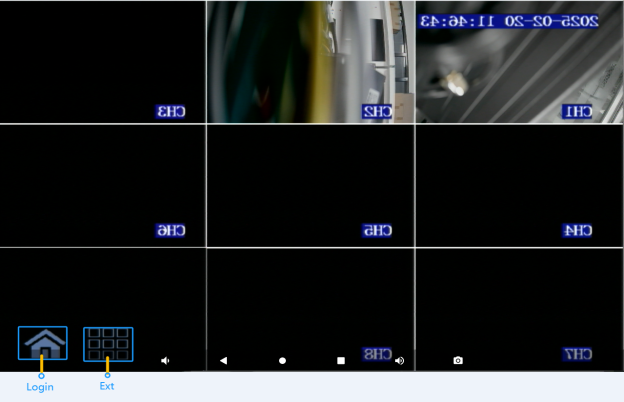
说明：
1、主界面“DVR”按键按下之后进入如上图2个界面，第1张图为进入DVR界面提示，第2张图是全屏DVR画面；
2、通过触摸点击2个按钮，可以登录DVR管理菜单和退出登录。触摸点击相应画面，可以将画面放大显示；
（注意：DVR的AVOUT默认接“智能终端”的“视频1“航空接口"。）
2.4 IO检测倒车、倒车开信号视频显示
| |
视频2 / VIN2画面 | 视频1 / VIN1画面 |

说明：
1、默认：开机默认显示为视频1（VIN1）画面。
2、线束上“IO1“对应检测倒车电平信号”，对应的画面是接VIN2，检测到高电平时，VIN2画面放大；
IO2“对应检测DVR画面的电平信号”，对应的视频画面是VIN1，检测到高电平时，VIN2画面放大。
3、如果两个信号同时来，优先倒车/BACK的VIN2画面显示；
4、在对接dvr的情况下，DVR检测到倒车和中门开信号会发数据给终端，作出对应显示，有协议说明；
5、当IO电平恢复和DVR发出退出信号数据，回到默认主界面下；
注：支持4路视频输入，自适应或固定CVBS-AHD1080P。
三、登陆.主菜单界面
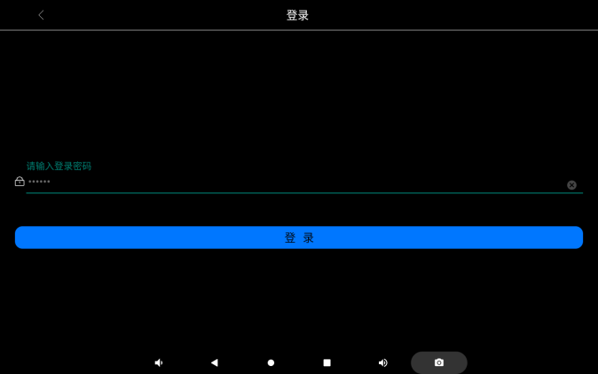
说明：1、默认密码：999999
3.1主菜单界面
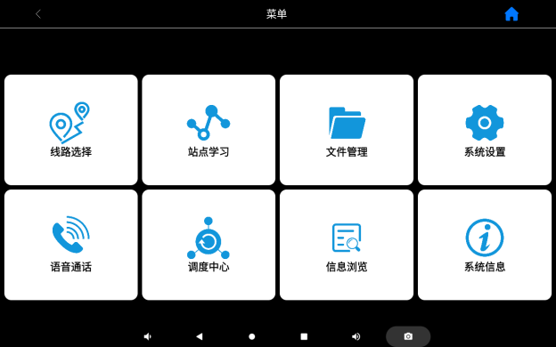
说明：
1、右上角“房子“图形返回主界面，左上角“向左箭头图形”点击返回上一界面，其他界面的都相同（下面界面不再作单独说明）；
2、总共有8个区块功能菜单；
3.1.1线路选择
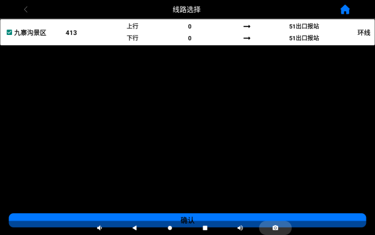
说明：
1、线路选择将设备里面保存的线路全部展现出来，可供客户自行切换，然后确认；
2、选中线路后，切换时可选择上下行；
3、信息展现，包括线路名称；线路属性（对开：起点和终点不一样；环线：起点站和终点站一样；防反：防止在“几”字型等复杂线路中往回报站）；
4、线路一页展示不够的直接上滑触摸屏展现。
3.1.2站点学习
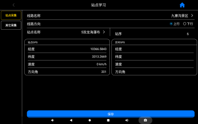 | 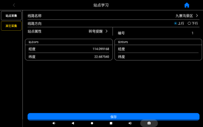 |
站点学习/Station Learn | 其他采集/Other Learn |
说明：
1、“站点采集”为对应公交站点的经纬度采集，“其他采集”为“转弯点”、“上坡”、“下坡”等特殊点的经纬度采集；
2、“线路名称”为当前需要采集的线路，“方向”为当前采集的方向；
3、“实时gps”为当前位置的gps信息；
4、“站点gps”为当前站点的经纬度，从上下行表格读取显示；
5、按下“保存”键，采集当前站点的gps坐标，并将坐标写入到上下行的站点表格中保存；
6、特别说明：如果当前“线路属性”是环形，需将上下行的线路站点表格做成一样，终端采集上行的站点坐标时对应的下行相同的站点会复制过去，不用重新将文件导出来再填一遍；
3.1.3文件管理
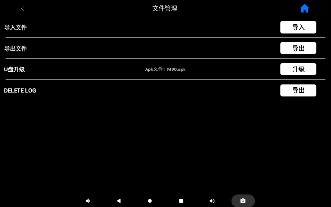
说明：
1、文件导入:将报站文件（报站文件放在“SourceFile”文件夹中，将“SourceFile”文件夹压缩为：SourceFile.zip，然后按规定的目录打包好放入U盘中，插入终端设备中，点击导入即可，文件目录 “BusRes/BusImport/SourceFile.zip”；
2、文件导出:U盘根目录下先创建好对应的文件夹，如下图——
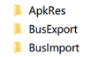
然后在菜单上点击“导出”，导出的文件（导出的文件即为 “SourceFile.zip”）存放目录： “BusRes/BusExport/SourceFile.zip”；
3、U盘升级:将升级文件，放入U盘规定的目录下，点升级即可，升级文件目录“BusRes/ApkRes/M90.apk”（升级文件名固定为：M90.apk）。
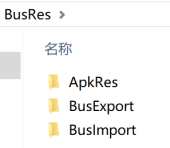
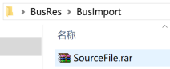
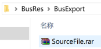
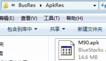
3.1.4系统设置
w 报站设置
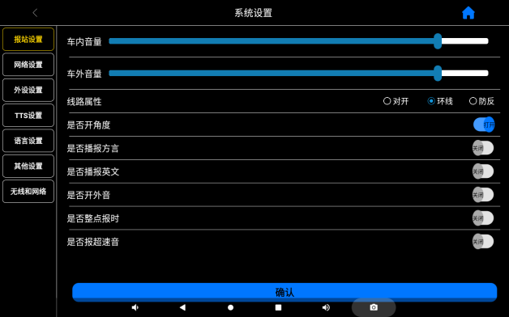
说明：
1、音量滑动调节；
2、选定好后“确认”键保存；
3、线路属性：（对开：起点和终点不一样；环线：起点站和终点站一样；防反：防止在“几”字型等复杂线路中往回报站）。
w 网络设置
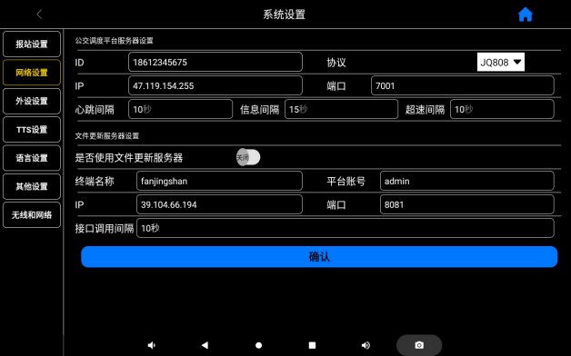
说明：
1、“公交调度平台服务器设置”：对应调度平台的信息；“协议”为对接的“调度协议”的类型；“ID”输入分配给车辆的ID；“IP”为调度服务器的IP信息；“信息间隔”为上传gps数据至平台的时间间隔；
2、“文件更新服务器设置”：为远程文件下发和远程升级服务器信息设置； “ID”输入分配给车辆的ID；“IP”为文件更新服务器的IP信息；
注：该页面设置完，确认后，页面会弹出“重启”提示界面，该页面设置的数据需重启才生效；
w 外设设置
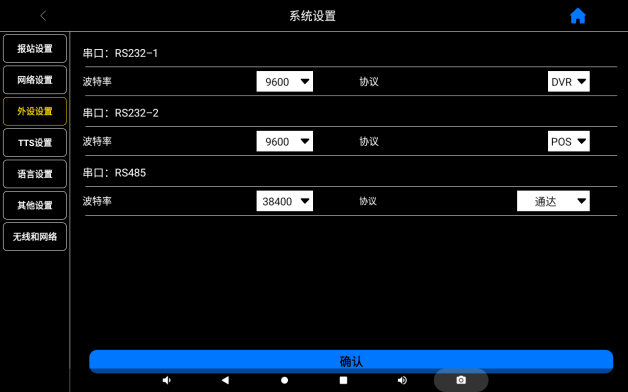
说明：
1、该页面为对接外设设备的设置，设置完后需重启设备才生效；
2、可选择对接波特率和协议；
3、可对接：DVR、POS机、LED屏、LCD屏等；
4、接受协议定制
w
TTS设置
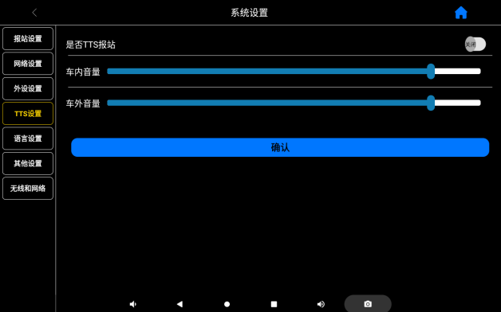
说明：
1、音量可滑动调节；
2、TTS报站选择“打开”，报站就直接走TTS通道文本转语音报站，不需要再录音；
w 语言设置
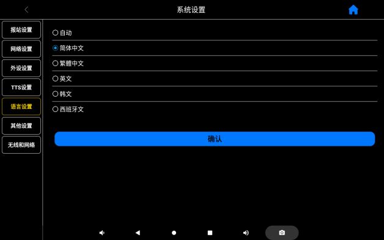
说明：
1、国际化语言；
2、可选择对应语言；
w 其它设置
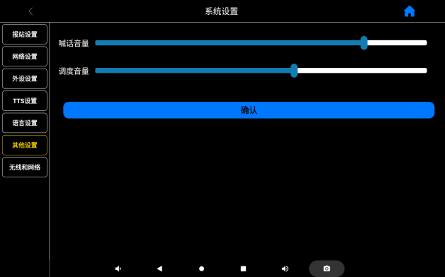
说明：
1、设置喊话音量；
2、设置调度平台下发的文件消息或者下发的调度发车时间信息播报音量；
无线和网络
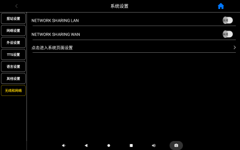 | 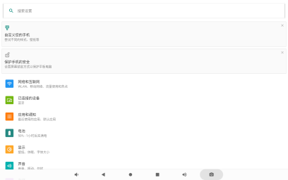 |
无线与网络设置 / WIRELESS | 系统设置页面/System Setting |
说明：
1、进入Android系统设置界面，设置WiFi等；
2、按最下面“返回箭头”按键返回到上级界面；
3.1.5语音通话
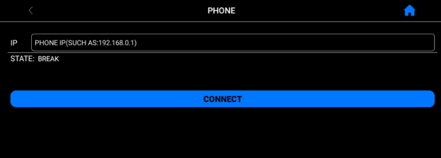
3.1.6调度中心
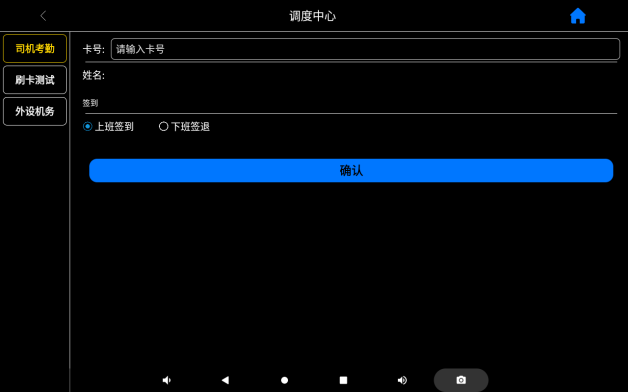
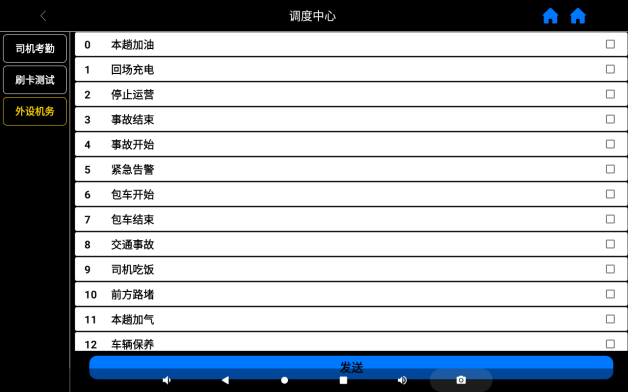
说明：1、司机刷卡考勤、机务信息、司机业务请求。
3.1.7信息浏览
说明：信息浏览中的内容，可定制向第三方LED/LCD屏发送，以便显示相应的文字信息，供乘客观看。
3.1.8系统信息
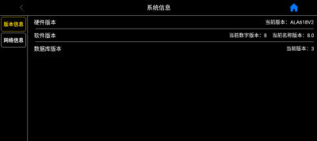 | 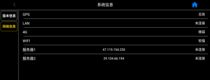 |
版本信息 / VER Info | 网络连接信息/NET Info |
说明：
1、显示软件、硬件版本信息；
四、 经纬度采集
1、采集经纬度之前先连接上GPS天线，开机后等待一段时间设备自动搜寻GPS信号（第一次搜寻信号时间很长1分钟左右，定位以后下次开机就能够很快的找到GPS信号），GPS定位成功后在主界面上会显示“GPS：有效”；
2、定位成功后在主界面点击【菜单】键，输入密码，进入“站点学习”菜单界面；
3、界面“实时GPS”块显示当前经纬度、速度、角度信息。到达相应站点后按下【保存】键即可采集对应站点信息并自动保存到相应的表格，站点会自动跳至下一站点，若采集过程中发现错误可以重新选择需要采集的站点再次采集覆盖原有经纬度；
五、升级及资源文件更新
4.1 U盘更新“报站资源文件”
1、将资源文件按规定的目录路径存放在U盘根目录下，“BusRes/BusImport/ “BusRes/BusImport/SourceFile.zip”， “SourceFile.zip”为支持的报站资源文件的一种压缩格式；
2、将U盘插入到设备的USB接口，进入到设备“菜单->文件管理”界面；
3、点击“导入”按钮，确定导入，等待导入完成，在界面会显示“成功导入报站文件，请拔出U盘”。
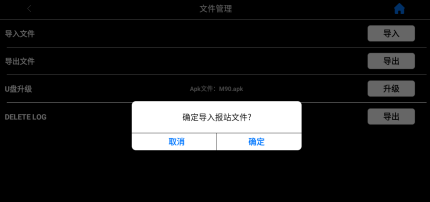 |
资源导入 / IMPORT |
4.2 U盘更新“终端程序”
1、将升级程序按规定的目录路径存放在U盘根目录下，路径为： “BusRes/ApkRes/M90.apk”（U盘升级文件名固定为：M90.apk）；
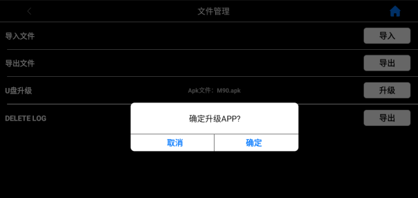
2、点击“升级”按钮，确定升级；
3、升级完成后会自动重启；
4.3 报站资源文件导出
1、将U盘插在设备的USB接口，进入到设备“菜单->文件管理”界面；
2、点击“导出按钮”，确定导出，等待导出完成，在界面会显示“成功导出报站文件，请拔出U盘”；
3、文件导出，将终端里所有报站文件导出到插在设备上的U盘中，导出的文件（导出的文件即为“SourceFile.rar”或者“SourceFile.zip”）存放目录：“BusRes/BusExport/SourceFile.rar”或者“BusRes/BusExport/SourceFile.zip”
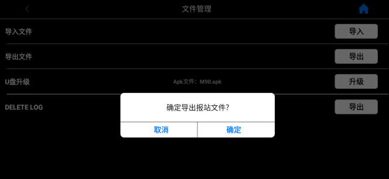
4.4 远程更新“报站资源文件”
1、config.csv表格中的“配置值”，不需要变更的，就空着不填，特别是调度平台ID、IP、端口、调度平台心跳间隔、调度平台信息间隔已经485的配置等；如果填写了就会按照填写的值更新，导致设备导入新的文件后无法按之前的配置连上平台和联动LCD、LED屏。
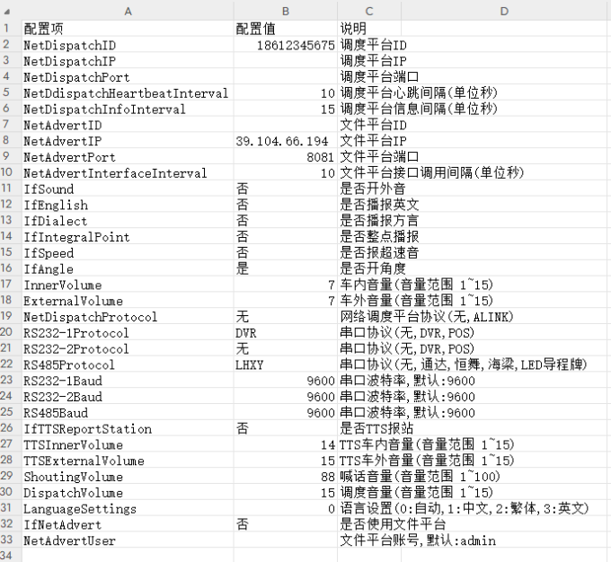
2、在平台导入“SourceFile.zip”资源文件,如下图：
在”固件管理”菜单下，选择“任务信息”，按要求填写（任务名称按自己需要随意填写，所属机构选择线路所属机构），URL地址点击“上传文件”导入需要更新的“SourceFile.zip”，然后点击确认；
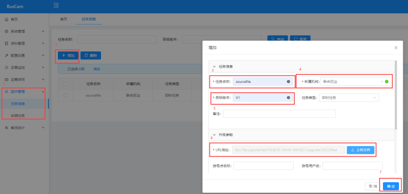
3、选择要远程升级的车辆，可以选择多辆车，如下图：
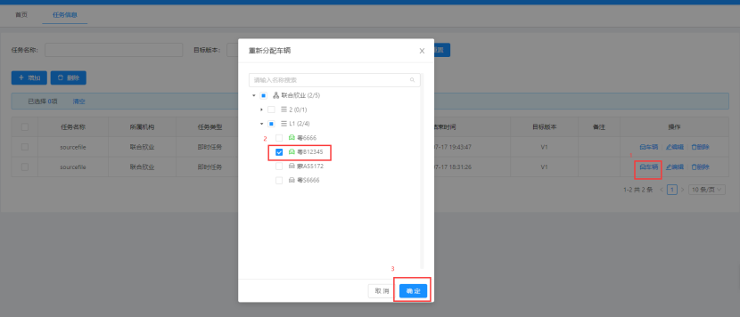
4、然后在“车辆任务”下就会显示刚才下发的任务，此时“任务状态”是“已发送”：
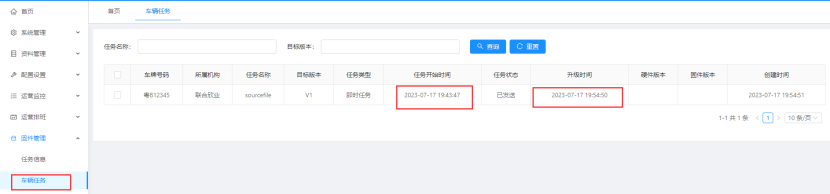
并且在终端设备上会显示“正在下载SourceFile...”
5、设备在下载完SourceFile会重启设备，重启设备重新上线后，平台会更新显示升级成功后的硬件版本和固件版本名称，并且任务状态显示“已查询”，“已查询”表明终端更新文件级成功；
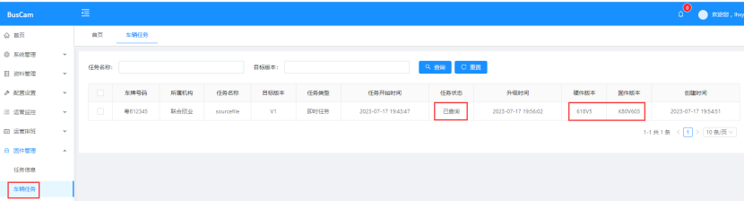
6、至此，远程文件更新完成；
4.5 远程更新“终端程序”
1、导入待升级的“M90.apk”文件；
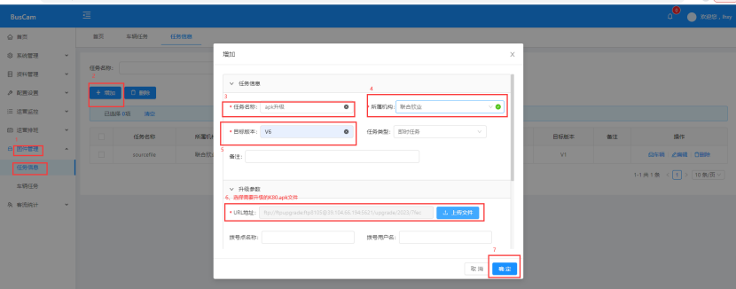
2、选择待升级的车辆，可选择多辆车，并点击确认；
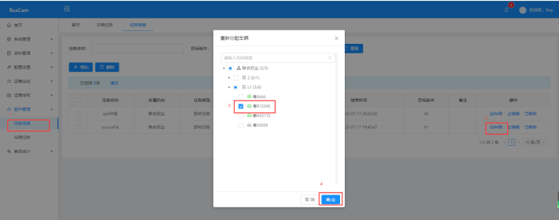
3、然后在“车辆任务”下就会显示刚才下发的任务，此时“任务状态”是“已发送”：
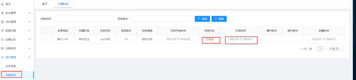
并且在终端设备上会显示“正在下载升级程序”：
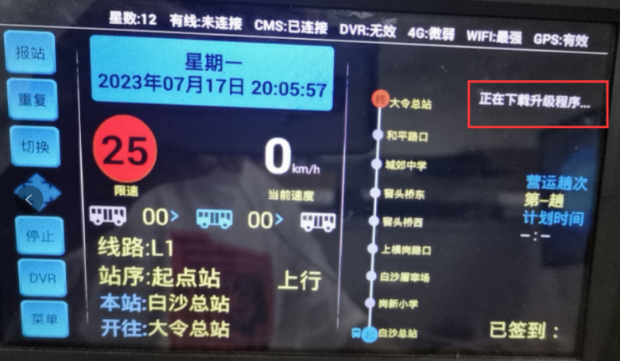
4、设备在下载升级程序后会重启设备，重启设备重新上线后，平台会更新显示升级成功后的硬件版本和固件版本名称，并且任务状态显示“已查询”，“已查询”表明终端升级成功；
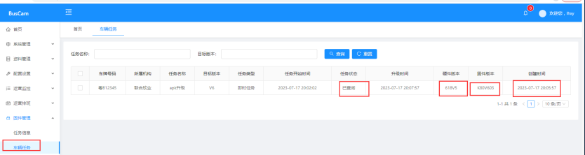
5、至此，远程升级完成；
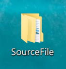
→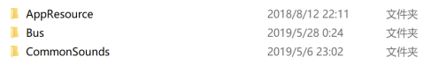
1.1、AppResource文件夹中存放APP所需部分UI控件
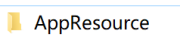
1.2、Bus文件夹中存放“线路线路名称命名的文件夹”、“线路总表”、“配置表格”
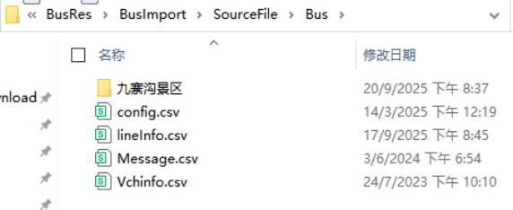
1.2.1、config.csv配置表格
说明：如不需修改都为默认项
1.2.2、lineInfo.csv表格线路总表
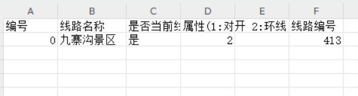
说明：“是否当前线路”栏只能有一个“是”，其他的均为“否”，设备启动时自动加载该线路在主界面显示。
1.2.3、“线路名称命名”的文件夹中用于存放“站点语音”、“线路名称语音”、“上下行站点表格”、“上下行转弯/上坡/下坡属性表格”
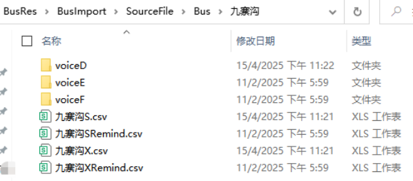
其中：1、voiceD文件夹中存放普通话的线路名称语音和站点语音；
2、voiceE文件夹中存放英文的线路名称语音和站点语音；
3、voiceF文件夹中存放方言的线路名称语音和站点语音；
1.3 CommonSounds文件夹说明
说明1：
1、CommonSounds->Common->voiceD文件夹下存放“进站音”、“出站音”、“起点音”，“终点音”、“外音”、“转弯提醒/上坡/下坡”、“超速语音”、“服务音0-9”；
2、CommonSounds->Clock->voiceD文件夹下存放整点报时语音；
3、进站广告，出站广告两列对应的语音放在CommonSounds->Adv->voiceD文件夹下；
4、进站提示，出站提示两列语音对应的语音放在CommonSounds->Other->voiceD文件夹下；
5、进站扩展，出站扩展两列语音对应的语音放在CommonSounds->Extend->voiceD文件夹下；
6、voiceD文件夹中存放普通话语音；voiceE文件夹中存放英文语音； voiceF文件夹中存放方言语音；
7、进站广告一般为：***提醒您；
8、出站提示一般为：有前往***商场或者转乘*路的请在本站下车；
9、出站扩展一般为：请拉好扶手，注意安全！或者注意卫生等等文明用语 。
说明2：
以下语音的目录位置：CommonSounds->Common->voiceD
1、出站音1：刚上车的乘客请您往里走，请坐好站稳，下一站是
2、出站音2：需要下车的乘客请做好准备
3、进展音1：叮咚
4、进站音2：到了
5、进站音3：需要下车的乘客请从后门下车
6、起点音1：乘客朋友们欢迎您乘坐
7、起点音2：公共汽车，本车由
8、起点音3：开往
9、起点音4：途径
10、起点音5：等站，请您按秩序乘车，谢谢合作
11、起点音6：下一站是
12、终点音1：下一站是
13、终点音2：终点站
14、终点音3：请您携带好自己的行李物品准备下车
15、终点音4：到了，请您携带好自己的行李物品准备下车
16、外音1：叮咚，本车是； 17、外音2：开往
说明3：
F0-F9分别对应CommonSounds->Common->voiceD文件夹下的“服务音0-服务音9”，以下为语音的文字内容。
1、F1：为了保障您的乘车安全，请不要将头、手、物品伸出窗外，谢谢配合（外）
2、F2:为了方便大家乘车，请站在前门口的乘客主动往车厢里面走，谢谢合作
3、F3:尊老爱幼是中华民族的传统美德，如果在您的身旁有老、弱、病、残、孕妇以及抱小孩的乘客，请您主动让座，谢谢合作
4、F4:乘客们，为了您和他人的安全，请不要携带易燃、易爆、有毒等危险品上车
5、F5：为了使您有有一个干净舒适的乘车环境，请您不要在车厢内吸烟、吐痰、乱扔果皮纸屑等物，谢谢合作
6、F6:本车是无人售票线路车，自备零钞，主动投币，不找零钱，谢谢合作
7、F7:乘客们，前方车辆转弯，请坐好站稳，以免发生意外
8、F8:各位乘客很抱歉，车辆发生意外，驾驶员会尽快跟进处理，请大家保持冷静，稍作等候，并主动帮助有需要的乘客，必要时驾驶员将安排大家免费转乘下一班或撤离至安全的地方，请下车的乘客注意安全，不便之处敬请谅解
9、F9:乘客们请保管好自己的行李物品，谨防遗失
10、F0: 车门要关，请注意安全，不要站在车门梯级上，并在规定的站点上下车（外）
2、线路表格格式
1、 在Bus文件夹中相应的线路文件夹中新建一个如上图所示的表格（表格的后缀为.csv），或者直接复制Bus文件夹下面的同后缀表格粘贴到相应的线路文件夹中改名即可，站点编号从0开始。
2、 报站语音栏填写站点对应的语音文件名，无字数限制。
3、 编辑完成并采集坐标后，表格应命名为“线路名称S.csv”或者“线路名称X.csv”，如101路上行文件表格应命名为101S.csv，101路下行则应命名为101X.csv，并均存入Bus文件夹里的对应线路文件夹中。
4、 站前里程根据实际中站点大小和报站语音长短来设定，报站器会根据设定大小来判断进站及出站时开始报站的时间。
5、 是否大站栏下面输入是或否就能设定线路中的大站，大站会在起点站语音中播报。
6、 经度、纬度、角度，三项由GPS模块采集坐标后自动填写。
说明：所有表格都是CSV格式（兼容EXCEL表格，但是所有表格必须所属统一类型）
3、语音播报顺序
l 起点出站：起点音1.mp3 +（线路名称）+ 起点音2.mp3 + （起点站）+ 起点音3.mp3 + （终点站）+ 起点音4.mp3 + (大站) + 起点音5.mp3 + 起点音6.mp3 + （下一站）+ （出站扩展）
l 进站播报：进站音1.mp3 + （进站广告） +（本站）+ 进站音2.mp3 + (进站提示) + 进站音3.mp3
l 出站播报：（出站广告） + 出站音1.mp3 + （下站）+ (出站提示) + 出站音2.mp3 + （出站扩展）
l 终点前站出站播报：终点音1.mp3 + 终点音2.mp3 + （终点站） + 终点音3.mp3
l 终点进站播报：终点音2.mp3 +（终点站） + 终点音4.mp3
l 进站外音： 外音1.mp3 + （线路名称） + 外音2.mp3 + 外音3.mp3 + （终点站） + 外音4.mp3
说明：红色字体部分可增添语音，在上下行表格对应位置添加
六、文件制作步骤范例（以普通话播报为例）
添加一条线路：906路
1、在bus文件夹下新建文件夹命名为“906” ；
2、在906文件夹中添加“906S.csv”和“906X.csv”两个文件，以及该线路所有站点音频文件（.mp3） ；
3、编辑“906S.csv”和“906X.csv”两个表格；
4、把本线路名音频（906.mp3）和所有站点音频文件（.mp3）放到“voiceD”文件夹中 ；
5、打开bus下的“lineInfo.csv”文档，按照格式添加线路名。
6、文件制作完成后，将 “SourceFile”文件夹压缩为 “SourceFile.zip”，按规定的目录打包好放入U盘中，插入终端设备中，点击导入即可，文件目录：“BusRes/BusImport/SourceFile.zip”。
说明：要播放几种语音的混合播报，只需将对应语言的音频文件放在对应的“voiceE”和“voiceF”文件夹中，然后再设置里面将对应的语言是否播放打开即可
7.1电源&喇叭线定义
7.2 视频线定义
7.3网口线定义（默认使用GX12-4P，支持定制，支持百兆和千兆接口）
7.4 GPS/4G天线定义
7.5 MIC/CAN/USB/UART/RS232/RS485线定义
八、终端外观尺寸图和支架尺寸图